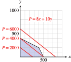
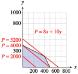
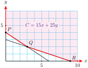

Subsection The Objective Function and Constraints
TrailGear would like to maximize its profit from selling hiking boots. The company produces two kinds of hiking boots, a Weekender model, on which it makes $\(8\) profit per pair, and a Sierra model, on which it makes $\(10\) profit per pair. How many of each model should TrailGear produce each week in order to maximize its profit?
If we let \(x\) represent the number of Weekender boots and \(y\) the number of Sierra boots TrailGear produces, then the total weekly profit is given by
\begin{equation*}
P = 8x + 10y
\end{equation*}
This expression for \(P\) is called the objective function. The goal of a linear programming problem is to maximize or minimize such an objective function, subject to one or more constraints.
If TrailGear had infinite resources and an infinite market, there would be no limit to the profit it could earn by producing more and more hiking boots. However, every business has to consider many factors, including its supplies of labor and materials, overhead and shipping costs, and the size of the market for its product. To keep things simple, we will concentrate on just two of these factors.
Each pair of Weekender boots requires \(3\) hours of labor to produce, and each pair of Sierra boots requires \(6\) hours. TrailGear has available \(2400\) hours of labor per week. Thus, \(x\) and \(y\) must satisfy the inequality
\begin{equation*}
3x + 6y \le 2400
\end{equation*}
In addition, suppose that TrailGear’s suppliers can provide at most \(1000\) ounces of silicone gel each week, with each pair of Weekenders using \(2\) ounces and each Sierra model using \(1\) ounce. This means that
\begin{equation*}
2x + y \le 1000
\end{equation*}
Of course, we will also require that \(x\ge 0\) and \(y\ge 0\text{.}\) These four inequalities are called the constraints of the problem.
Checkpoint 8.83. QuickCheck 1.
Subsection The Optimum Solutions
We cannot check all of the feasible solutions to see which one results in the largest profit. Fortunately, there is a simple way to find the optimal solution.
Consider the objective function,
\begin{equation*}
P = 8x + 10y
\end{equation*}
Suppose TrailGear would like to make \($2000\) on hiking. It could produce \(200\) pairs of Sierra boots, or \(250\) pairs of Weekenders. Or it could produce some of each; for example, \(50\) pairs of Weekenders and \(160\) pairs of Sierra boots. In fact, every point on the line
\begin{equation*}
8x + 10y = 2000
\end{equation*}
represents a combination of Weekenders and Sierra boots that will yield a profit of $\(2000\text{.}\) This line is labeled \(P = 2000\) in the figure below.

If TrailGear would like to make $\(4000\) on boots, it should choose a point on the line labeled \(P = 4000\text{.}\) Similarly, all the points on the line labeled \(P = 6000\) will yield a profit of $\(6000\text{,}\) and so on. Different values of \(P\) correspond to parallel lines on the graph. Smaller values of \(P\) correspond to lines near the origin, and larger values of \(P\) have lines farther from the origin.
Checkpoint 8.88. QuickCheck 3.
Example 8.89.
The figure below shows the feasible solutions for another linear programming problem. The objective function is \(C = 3x + 5y\text{.}\)
Find the value of \(C\) at the point \((0, 3)\text{.}\) Are there other feasible solutions that give the same value of \(C\text{?}\)
Find all feasible solutions that result in an objective value of \(30\text{.}\)
How many feasible solutions result in an objective value of \(39\text{?}\)
Is it possible for a feasible solution to result in an objective value of 45?
Solution.
-
The objective value at the point \((0, 3)\) is
\begin{equation*}
C = 3(\alert{0}) + 5(\blert{3}) = 15
\end{equation*}
Another point with the same objective value is \((5, 0)\text{.}\) In fact, all points on the line \(3x + 5y = 15\) have an objective value of \(15\text{.}\) This line intersects the set of feasible solutions in a line segment, as shown in below. Thus, there are infinitely many feasible solutions with objective value \(15\text{.}\)
Points that give an objective value of \(C = 30\) lie on the line \(3x + 5y = 30\text{,}\) as shown in the figure. There are infinitely many feasible solutions that lie on this line; for example, one such point is \((5, 3)\text{.}\)
The line \(3x + 5y = 39\) intersects the set of feasible solutions in only one point, the point \((3, 6)\text{.}\) This is the only feasible solution that yields an objective value of \(39\text{.}\)
The line \(3x + 5y = 45\) includes all points for which \(C=45\text{.}\) This line does not intersect the set of feasible solutions, as we see in the figure. Thus, there are no feasible solutions that result in an objective value of \(45\text{.}\)
Checkpoint 8.90. Practice 2.
We are only allowed to choose points from the set of feasible solutions. Imagine the parallel lines representing different values of the objective function sweeping across the graph of the feasible solutions. The objective values increase as the lines sweep up across the graph.
What is the last feasible solution the lines intersect before leaving the shaded region? If you study the preceding examples, perhaps you can see that the largest (and smallest) values of the objective function will occur at corner points of the set of feasible solutions. We have not proved this fact, but it is true.
Linear Programming.
The maximum and the minimum values of the objective function always occur at vertices of the graph of feasible solutions.
Depending on the exact formula for the objective function, the maximum and minimum values may occur at any of the vertices of the shaded region.
Example 8.91.
Find TrailGear’s maximum weekly profit.
Solution.
The figure below shows the lines corresponding to the objective values \(P = 2000\text{,}\) \(P = 4000\text{,}\) and \(P = 5200\text{.}\)

The maximum value of the profit, \(P\text{,}\) corresponds to the topmost line that intersects the region of feasible solutions. This is the line that passes through the vertex where the lines \(~~3x + 6y = 2400~~\) and \(~~2x + y = 1000~~\) intersect, namely the vertex at \((400, 200)\text{.}\) The profit for that point is
\begin{equation*}
P = 8(400) + 10(200) = 5200
\end{equation*}
so the maximum weekly profit is \($5200\text{.}\)
Checkpoint 8.92. Practice 3.
We can now formulate a strategy for solving problems by linear programming.
To Solve a Linear Programming Problem:.
Represent the unknown quantities by variables. Write the objective function and the constraints in terms of the variables.
Graph the solutions to the constraint inequalities.
Find the coordinates of each vertex of the solution set.
Evaluate the objective function at each vertex.
The maximum and minimum values of the objective function occur at vertices of the set of feasible solutions.
Checkpoint 8.93. QuickCheck 4.
In
Example 8.94, the set of feasible solutions is an unbounded region.
Example 8.94.
Each week, the Healthy Food Store buys both granola and muesli in bulk from two cereal companies. The store requires at least \(12\) kilograms of granola and \(9\) kilograms of muesli.
Company A charges $\(15\) for a package that contains \(2\) kilograms of granola and \(1\) kilogram of muesli.
Company B charges $\(25\) for a package of \(3\) kilograms of granola and \(3\) kilograms of muesli.
How much should the Healthy Food Store purchase from each company in order to minimize its costs and still meet its needs for granola and muesli? What is the minimum cost?
Solution.
-
\begin{gather*}
{\text{Number of packages purchased from Company A: }~~x} \\
{\text{Number of packages purchased from Company B: } ~~y}
\end{gather*}
First, we write the objective function. The store would like to minimize its cost, so
\begin{equation*}
C = 15x + 25y
\end{equation*}
Next, we write the constraints. These will be a system of inequalities. It may help to organize the information into a table.
|
Company A |
Company B |
Required |
| Granola |
\(2x\) |
\(3y\) |
12 |
| Muesli |
\(x\) |
\(3y\) |
9 |
The Healthy Food Store will have \(2x\) kilograms of granola and \(x\) kilograms of muesli from Company A, and \(3y\) kilograms of granola and \(3y\) kilograms of muesli from Company B. The store requires that
\begin{align*}
2x + 3y \amp\ge 12\\
x + 3y \amp\ge 9
\end{align*}
Because the store cannot purchase negative quantities, we also have
\begin{equation*}
x \ge 0, ~~~~~y \ge 0
\end{equation*}
-
We graph the solutions to the constraint system. The feasible solutions form the shaded region shown below. Any ordered point on this graph corresponds to a way to purchase granola and muesli that meets the store’s needs, but some of these choices cost more than others.

We know that the minimum cost will occur at one of the vertex points, which are labeled in the figure. The coordinates of \(P\) and \(R\) are easy to see. To find the coordinates of \(Q\text{,}\) we notice that it is the intersection of the lines \(2x + 3y = 12\) and \(x + 3y = 9\text{.}\) Thus, we must solve the system
\begin{align*}
2x + 3y \amp= 12\\
x + 3y \amp = 9
\end{align*}
Subtracting the second equation from the first, we find that \(x=3\text{.}\) Substituting this value into either of the original two equations, we find that \(y=2\text{.}\) Thus the point \(Q\) has coordinates \((3, 2)\text{.}\)
Now we evaluate the objective function at each of the three vertices.
\begin{align*}
\amp\text{At }P (0, 4): \amp C \amp= 15(\alert{0})+ 25(\blert{4}) = 100{}\\
\amp\text{At }P (3,2):\amp C \amp= 15(\alert{3})+ 25(\blert{2})=95{}\amp\amp \blert{\text{Minimum cost}}\\
\amp\text{At }P (9,0): \amp C \amp= 15(\alert{9})+ 25(\blert{0}) = 135{}\amp
\end{align*}
The minimum cost occurs at point \(Q\text{.}\)
The Healthy Food Store should buy three packages from Company A and two packages from Company B. It will pay $\(95\) for its stock of granola and muesli.
Checkpoint 8.95. Practice 4.
Checkpoint 8.96. Pause and Reflect.
Technology 8.97. Using a Graphing Calculator.
You can use your graphing calculator to solve the problem in
Example 8.94. Set the window values at
\begin{align*}
\text{Xmin} \amp = 0 \amp\amp \text{Xmax} = 9.4\\
\text{Ymin} \amp = 0 \amp\amp \text{Ymax} = 6.2
\end{align*}
Next, graph the set of feasible solutions. We have already taken care of the constraints \(x\ge 0\) and \(y\ge 0\) by setting Xmin and Ymin to zero. Solve each of the other constraints for \(y\) to get
\begin{align*}
y \amp\ge (12 - 2x)/3\\
y \amp\ge(9 - x)/3
\end{align*}
For each constraint, the set of feasible solutions lies above the boundary line, because \(y\) is greater than the expression in \(x\text{.}\) To shade the regions above the graphs of \(Y_1\) and \(Y_2\text{,}\) move the cursor onto the backslash in front of the equations and press ENTER twice, as shown in figure (a). Then press GRAPH. Your display should look like figure (b).

The feasible solutions lie in the crosshatched region that is shaded with both the vertical and horizontal lines. We will use the calculator to evaluate the objective function at each vertex. First, use the TRACE (or value or intersect feature) to find the coordinates of one of the vertices, say \((0, 4)\text{.}\) Then press 2nd QUIT to get back to the Home screen; enter the formula for the objective function by keying in
\begin{equation*}
15X + 25Y
\end{equation*}
(Enter \(Y\) by pressing ALPHA \(1\text{.}\)) Your calculator has stored the values \(x=0\) and \(y=4\) from the TRACE key, so when you press ENTER, the calculator returns \(100\) for the value of \(C\) at that point. Thus, when \(x=0\) and \(y=4\text{,}\) \(C=100\text{.}\)
Similarly, you can verify that \(C=135\) when \(x=9\) and \(y=0\text{,}\) and that when \(x=3\) and \(y=2\text{,}\) \(C-95\text{.}\) Thus, the minimum cost of \(\$95\) occurs when \(x=3\) and \(y=2\text{.}\)